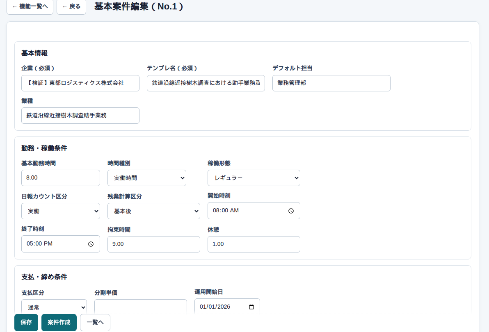

マスタ → 基本案件 → 編集
基本案件の詳細
開くとこう見えます
企業、テンプレ名、開始・終了の目安、締日、休憩などをひな形として持ちます。下に、このひな形から作った個別案件の一覧も出ます。

何をどこに入れるか
| ここ | 何をするか |
|---|---|
| 企業 | 必須。名前の一部で探せます |
| テンプレ名 | 必須。一覧に出る仕事の名前 |
| 開始 / 終了 / 休憩 | 日報入力の初期値 |
| 締日 | 請求・日報提出・先払のサイクルの元 |
| 支払区分 | 通常か分割。分割は先払い画面に出ます |
気をつけること
金額（単価）は金額データ側です。ひな形だけでは日報の計算は動きません。